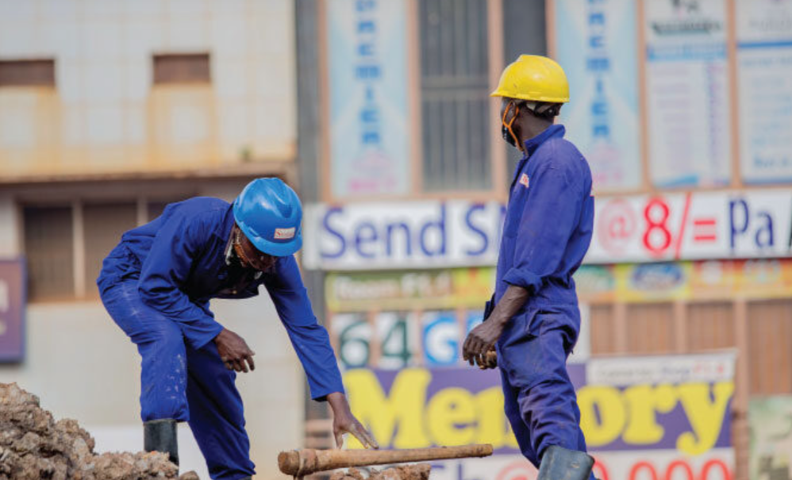
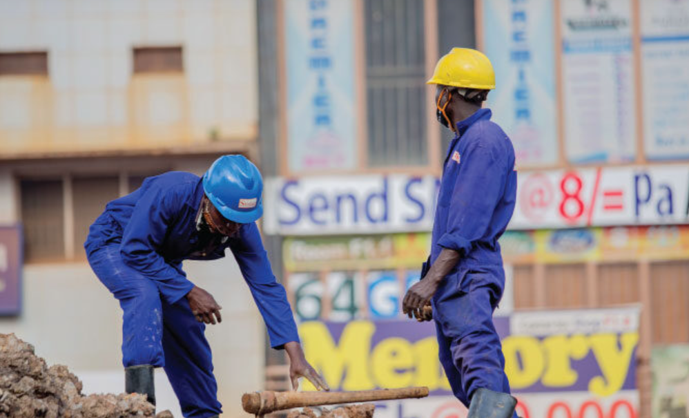

Project Duration
2018 November
Project Objectives
Consultancy services for the development of design standards and manuals for construction and maintenance of urban roads.
Technical support unit for the District of Lira, Kumi, Nakapiripit, Mbale, Katakwi, Soroti, Pallisa, Sironko, and Kapchorwa.
Development of the Uganda National Axle Load Control Policy.
Rural accessibility improvement project, Uganda.
Consultancy services for the preparation of the overview paper of the transport sector in the national economy and rapporteuring series, May 2004.
Road Sector Development Programme, Uganda Support to district road networks in northern Uganda.
Joint Annual Transport Sector Review.
The Uganda road agency study New Partnership for Africa’s Development, NEPAD, Uganda.
Baseline Survey of Non-Physical Barriers along the Northern Corridor.

 
